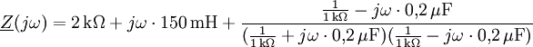
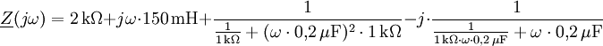
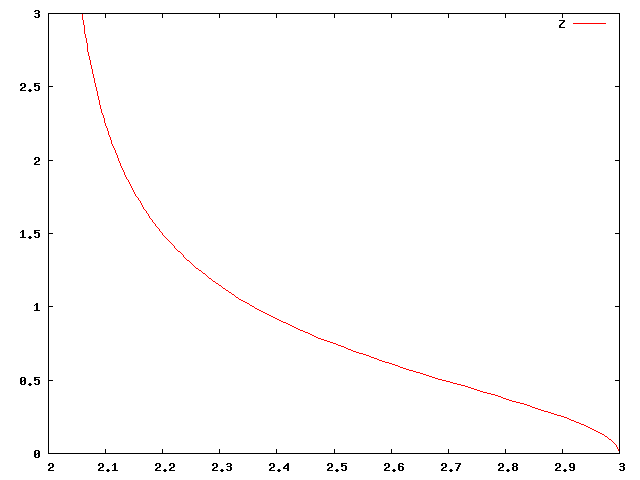

In der Elektrotechnik werden Ortskurven verwendet, um das parameterabhängige Verhalten von Netzwerkfunktionen darzustellen. Dieser Artikel zeigt an einem Beispiel wie sich eine Ortskurve mit Gnuplot zeichnen lässt.
Als Beispiel betrachten wir das folgende Netzwerk mit dem komplexen Widerstand als Netzwerkfunktion.
Der komplexe Widerstand dieses Netzwerks berechnet sich zu


Aus der letzten Gleichung lässt sich die Realteilfunktion Re(ω) und die Imaginärteilfunktion Im(ω) ablesen.


Mit einem Texteditor erstellen wir das folgende Gnuplot-Skript (ortskurve.txt).
| Befehl | Erklärung |
|---|---|
| set terminal png | #Ausgabeformat PNG |
| set output "ortskurve.png" | #Ausgabedatei ortskurve.png |
| set parametric | #Modus parametrisierte Kurven wählen |
| set trange [ 0 : 20000 ] | #Wertebereich für ω |
| plot 2 + 1/(1 + (t * 0.2 * 10**(-6))**2 * 1000**2), t * (0.15/1000 - 1/(1/(0.2 * 10**(-6)) + t**2 * 0.2 * 10**(-6)/1000)) title "Z" | #Kurve zeichnen |
Die Funktion zum Zeichnen der Kurve hat folgendes Format
plot <Re(t)>,<Im(t)> title "<title>"
Für den Parameter <Re(t)> wird die Realteilfunktion und für den Parameter <Im(t)> die Imaginärteilfunktion eingesetzt. Bei der Angabe der Formeln ist zum Einen zu beachten, dass die Variable ω in t umbenannt wird. Zum Anderen wird erfolgt das Potenzieren mittels **. Der Ausdruck t2 wird somit t**2 geschrieben. Der frei wählbare Parameter <title> erscheint im Graphen als Bezeichnung der Kurve.
Gibt man nun auf der Kommandozeile den Befehl
gnuplot ortskurve.txt
ein, erzeugt Gnuplot eine Datei ortskurve.png mit dem folgenden Bild.
